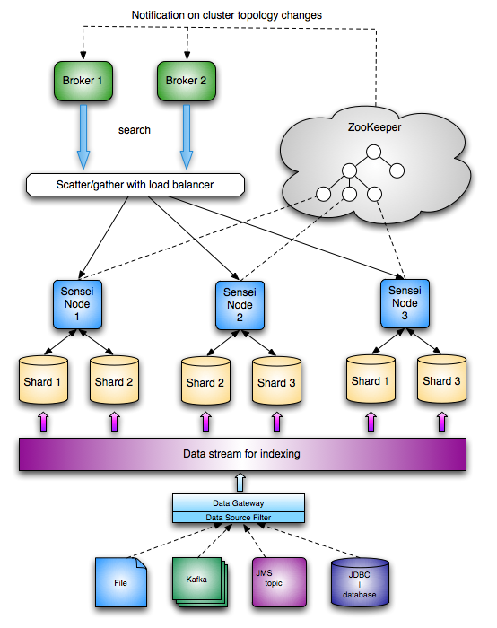

Sensei is a distributed database that is designed to handle the following type of query:
SELECT f1,f2...fn FROM members
WHERE c1 AND c2 AND c3..
MATCH (fulltext query, e.g. "java engineer")
GROUP BY fx,fy,fz...
ORDER BY fa,fb...
LIMIT offset,count
Architecture:

Some Features
- Full-text search
- Faceted Search
- Dynamic Sorting
- Streaming index
- Fast realtime update
- Distributed - sharded
- Dynamic cluster support
- ...
Design considerations
- data:
- Fault tolerance - when one replication is down, data is still accessible
- Durability - N copies of data is stored
- Through-put - Parallelizable request-handling on different nodes/data replicas, designed to handle internet traffic
- Consistency - Eventally consistent
- Data recovery - each shared/replica is noted with a watermark for data recovery
- Large dataset - designed to handle 100s millions - billions of rows
- horizontally scalable:
- Data is partitioned - so work-load is also distributed
- Elasticity - Nodes can be added to accomodate data growth
- Online expansion - Cluster can grow while handling online requests
- Online cluster management - Cluster topology can change while handling online requests
- Low operational/maintenance costs - Push it, leave it and forget it.
- performance:
- low indexing latency - real-time update
- low search latency - millisecond query response time
- low volatility - low variance in both indexing and search latency
- customizability:
- plug-in framework - custom query handling logic
- routing factory - custom routing logic, default: round-robin
- index sharding strategy - different sharding strategy for different applications, e.g. time, mod etc.
Comparing to a traditional RDBMS
RDBMS:
- scales vertically
- strong ACID guarantee
- relational support
- performance cost with full-text integration
- high query latency with large dataset, esp. Group By
- indexes needs to be built for all sort possibilities offline
Sensei:
- scales horizontally
- relaxed Consistency with high durability guarantees
- data is streamed in, so Atomicity and Isolation is to be handled by the data producer
- full-text support
- low query latency with arbitrarily large dataset
- dynamic sorting, index is already built for all sortable fields and their combinations